Théorème de Pythagore
GéométrieDans un triangle rectangle, le carré de l'hypoténuse égale la somme des carrés des deux côtés. La preuve visuelle : l'aire des deux carrés bleus remplit exactement le carré doré. Réglez les côtés.
Dossier transversal · Le lexique mathématique de l'Empire
Chaque dossier de l'Empire a fini par parler le langage des mathématiques. Voici l'atlas vivant de toutes ses équations — de la vis-viva qui guide Artemis aux quatre lois de Maxwell, du modèle de Bohr au cycle proie-prédateur de Lotka-Volterra. On ne les montre pas : on les manipule.
Une formule, ce n'est pas un mur. C'est une machine — on tourne les boutons, et le monde répond.
Ce dossier ne crée pas de nouvelle science : il rassemble toutes les formules déjà rendues en LaTeX dans les dossiers de l'Empire — Artemis II, le Tableau périodique, les Champs de vecteurs, les Tornades — et leur donne ce qu'une page figée ne peut offrir : l'expérience. Bougez un curseur, et l'orbite se déforme, la raie spectrale change de couleur, la tornade tourne, le noyau se désintègre. Chaque équation devient un petit atelier. Toutes les valeurs par défaut sont celles, vérifiées, des dossiers d'origine.
Toutes les formules de l'Empire, rendues en vrai LaTeX, regroupées par domaine et reliées à leur dossier d'origine.
Pour chacune : ce qu'elle dit, ce que valent ses symboles, et pourquoi elle compte.
Un atelier interactif par formule — curseurs, calcul en direct et visualisation qui réagit.
Acte 0 · Les classiques de toujours
Avant l'espace et l'atome, les formules qu'on apprend tous — et qui, manipulées, deviennent évidentes. Le triangle de Pythagore, le cercle trigonométrique, le nombre d'or, la cloche de Gauss, et même une fractale.
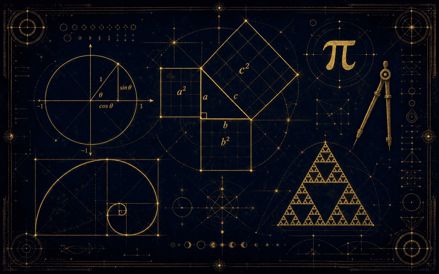
Dans un triangle rectangle, le carré de l'hypoténuse égale la somme des carrés des deux côtés. La preuve visuelle : l'aire des deux carrés bleus remplit exactement le carré doré. Réglez les côtés.
Sur le cercle de rayon 1, un angle donne un point dont l'abscisse est cos θ et l'ordonnée sin θ. Tournez l'angle et lisez les trois fonctions, projetées sur les axes.
« La plus belle formule » : multiplier par , c'est tourner d'un angle θ dans le plan complexe. En θ = π, on obtient .
π relie le rayon à la circonférence et à l'aire. Faites rouler le cercle : sur une longueur de 2πr, il fait exactement un tour.
La suite de Fibonacci (1, 1, 2, 3, 5, 8, 13…) : chaque terme est la somme des deux précédents, et le rapport de deux termes consécutifs tend vers le nombre d'or. Déroulez la spirale dorée.
L'astuce du petit Gauss : deux escaliers de points forment un rectangle — la somme en est la moitié. Réglez n.
La généralisation de Pythagore à tout triangle. Quand , le terme en cosinus s'annule et on retrouve .
La loi normale : moyenne , écart-type . 68 % de l'aire dans , 95 % dans .
La dérivée donne la pente de la tangente en chaque point. Déplacez le point : la droite épouse toujours la courbe localement.
On additionne deux vecteurs composante par composante — ou, géométriquement, en fermant le parallélogramme : la diagonale est la résultante. Réglez les quatre composantes.
La formule la plus simple qui produise une complexité infinie : pour chaque point du plan, la suite reste-t-elle bornée ? Survolez pour zoomer dans l'infini.
Deux sécantes issues d'un point O, coupées par deux parallèles : elles découpent des segments proportionnels. Glissez la parallèle, les deux rapports restent égaux.
Chaque terme est la somme des deux précédents : voyez chaque barre s'empiler à partir des deux d'avant, et le rapport converger vers le nombre d'or.
Une somme infinie qui tient dans une longueur finie : chaque segment vaut , et tous ensemble remplissent 1/(1−r). Pour r = ½ : 1 + ½ + ¼ + … = 2.
L'aire sous une courbe = la limite d'une somme de rectangles (Riemann). Augmentez leur nombre : la somme se rapproche de l'aire exacte. Choisissez aussi le point d'échantillonnage.
Chaque nombre est la somme des deux au-dessus. Les coefficients binomiaux — et, en ne gardant que la parité, le triangle de Sierpiński surgit.
Lancez des points au hasard dans un carré : la fraction qui tombe dans le quart de disque vaut π/4. Plus il y a de points, meilleure est l'estimation.
Le problème non résolu le plus simple : pair → on divise, impair → ×3+1. Toute valeur de départ semble finir à 1… mais personne ne sait le prouver. Tracez la trajectoire.
Partez d'un point, sautez à mi-chemin d'un sommet tiré au hasard, recommencez. Du pur hasard naît un ordre parfait : le triangle de Sierpiński.
Deux oscillations perpendiculaires de fréquences et dessinent des nœuds élégants — c'est ce qu'on voyait sur les vieux oscilloscopes. Le rapport fixe le motif, le déphasage le fait respirer.
Un disque de rayon roule sans glisser à l'intérieur d'un cercle de rayon ; un stylo planté à la distance trace une hypotrochoïde. Le rapport décide du nombre de pétales.
Enroulez les entiers en spirale et n'éclairez que les nombres premiers : au lieu d'un nuage aléatoire, ils s'alignent en diagonales. Un motif encore mal expliqué, griffonné par Ulam pendant une conférence ennuyeuse.
Une somme infinie de fractions impaires alternées converge vers . Magnifique mais lente : il faut des centaines de termes pour deux décimales. Regardez l'estimation osciller puis se resserrer.
Une seule équation polaire engendre les quatre coniques selon l'excentricité : cercle (), ellipse (), parabole (), hyperbole (). Ce sont aussi les trajectoires possibles autour d'un astre.
Acte I · d'après Artemis II — Provoxys
Comment on quitte la Terre, comment on rejoint la Lune, et la puissance qu'il faut pour cela. Les lois de Newton et de la mécanique céleste, réglables au curseur.
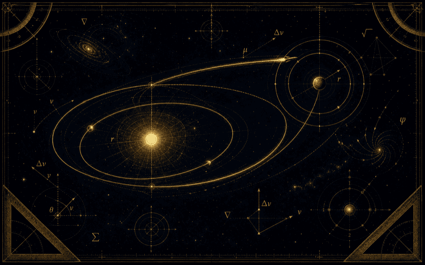
La vitesse v d'un vaisseau à la distance r du centre de la Terre, sur une orbite de demi-grand axe a (). Réglez l'orbite et regardez le vaisseau accélérer au périgée, ralentir à l'apogée.
À une altitude donnée, la vitesse pour rester en orbite circulaire, et celle (√2 fois plus grande) pour s'échapper de l'attraction terrestre.
La force divisée par la masse donne l'accélération. Les 39 000 kN du SLS sur ~4 000 t donnent près de 10 m/s².
Le delta-v qu'une fusée peut produire, à partir de l'impulsion spécifique et du rapport de masse plein/à sec. Croît en logarithme : d'où l'enjeu du ravitaillement.
La puissance cinétique des gaz éjectés : débit massique fois le carré de la vitesse d'éjection . De l'ordre du gigawatt au décollage.
Le transfert le plus économe entre deux orbites circulaires : deux mises à feu tangentes et une demi-ellipse. Réglez les deux rayons et regardez l'ellipse de transfert se dessiner.
Le grondement du décollage (et toute intensité : son, lumière, gravité) décroît comme l'inverse du carré de la distance. Doublez la distance, l'intensité est divisée par quatre.
Le flux de chaleur à travers le bouclier d'Orion : proportionnel à la conductivité et au gradient de température. C'est lui qui dimensionne l'écran face aux 2 760 °C de la rentrée.
Le segment qui relie une planète au Soleil balaie des aires égales en des temps égaux : la planète fonce au périhélie et lambine à l'aphélie. C'est la conservation du moment cinétique, rendue visible.
L'énergie spécifique d'une orbite ne dépend que du demi-grand axe : le long de l'ellipse, l'énergie cinétique et la potentielle s'échangent en permanence, mais leur somme reste figée. C'est le « vis-viva » sous sa forme énergétique.
Acte II · d'après Le Tableau Périodique — Jorge & Zalex
De l'équivalence masse-énergie au modèle de Bohr, des raies spectrales à la radioactivité : la matière, niveau d'énergie par niveau d'énergie.
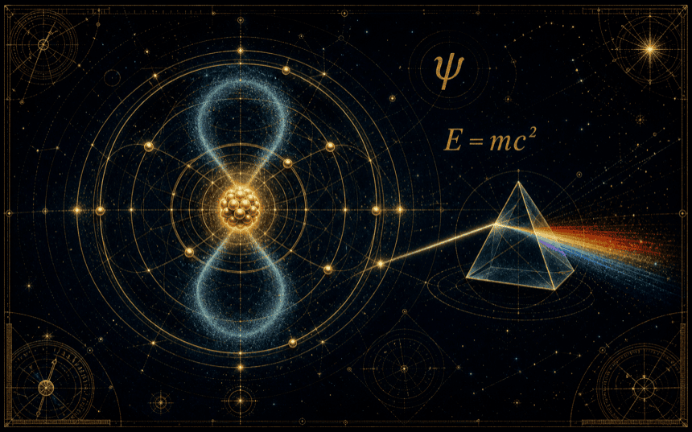
Masse et énergie sont deux faces d'une même grandeur. Une once de matière contient une énergie colossale — convertissez et comparez.
La loi de Faraday : 1 kg d'eau donne 0,11 kg d'H₂ + 0,89 kg d'O₂ (rapport de masses 18 → 2 + 16). Le carburant lunaire qu'on n'a pas eu à lancer.
L'énergie d'un électron sur la couche n, corrigée par la charge effective . Cliquez un niveau : l'électron y saute et émet un photon dont la longueur d'onde — et la couleur — est calculée.
La longueur d'onde de la lumière émise quand l'électron de l'hydrogène retombe de vers . La série de Balmer (n₁ = 2) est visible — voyez la raie réelle.
D'où viennent 2, 8, 18, 32 : chaque orbitale tient 2 électrons (Pauli), chaque sous-couche , chaque couche .
Le nombre de noyaux décroît exponentiellement ; la demi-vie est le temps pour en désintégrer la moitié. C'est l'horloge de la datation radiométrique. Lancez la désintégration.
Un élément en devient un autre : α retire 2 protons et 2 neutrons, β⁻ change un neutron en proton, γ ne fait que se désexciter. Partez d'un noyau et désintégrez-le.
On ne connaît plus la position de l'électron, mais une densité de probabilité : le carré de la fonction d'onde. Voici le nuage, orbitale par orbitale.
Toute particule en mouvement est aussi une onde, de longueur d'onde inversement proportionnelle à sa quantité de mouvement. Pour un électron lent, λ atteint l'échelle atomique — d'où la diffraction des électrons.
On ne peut pas connaître en même temps la position et la vitesse avec une précision arbitraire : resserrer le paquet d'onde en position l'élargit en impulsion. Ce n'est pas un défaut de mesure, c'est la nature même du quantique.
La lumière arrache des électrons — mais seulement si sa fréquence dépasse un seuil, quelle que soit l'intensité. La preuve que la lumière est faite de quanta (photons) ; ce qui valut son Nobel à Einstein.
Acte III · d'après Le langage des champs — Samlepirate
Une flèche par point de l'espace, puis deux opérations qui la lisent comme un fluide — la divergence et le rotationnel — jusqu'aux quatre équations qui font la lumière.
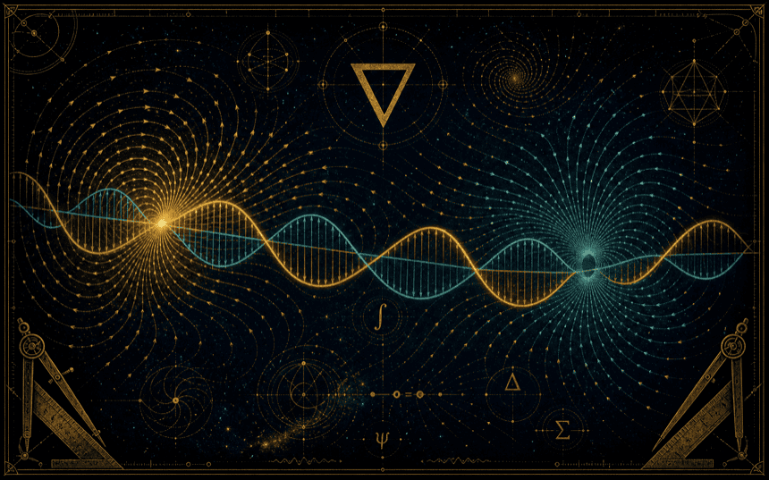
Imaginez le champ comme un fluide. La divergence dit s'il jaillit (source) ou s'engouffre (puits) ; le rotationnel dit s'il tourne. Choisissez un champ, lisez les deux nombres, regardez la brindille tourner.
Le gradient d'un relief pointe vers la plus forte montée ; son opposé dévale la pente. Déplacez la souris sur la colline : la flèche suit toujours la pente.
Le scalaire mesure l'alignement (cos θ), le vectoriel la perpendicularité (sin θ). Tournez les deux vecteurs et lisez-les.
Deux divergences (les charges sont sources ; pas de monopôle magnétique) et deux rotationnels (chaque champ relance l'autre) — et de ce va-et-vient naît l'onde lumineuse. Réglez sa fréquence.
Proies et prédateurs : un champ de vecteurs dans l'espace des phases. Réglez les taux et regardez le cycle proie-prédateur tourner en boucle fermée.
Acte IV · d'après Tornades, Typhons & Ouragans — Provoxys
Ce qui fait tourner les tempêtes : la force qui dévie les vents, l'énergie qui nourrit les orages, et la rotation qui les organise.
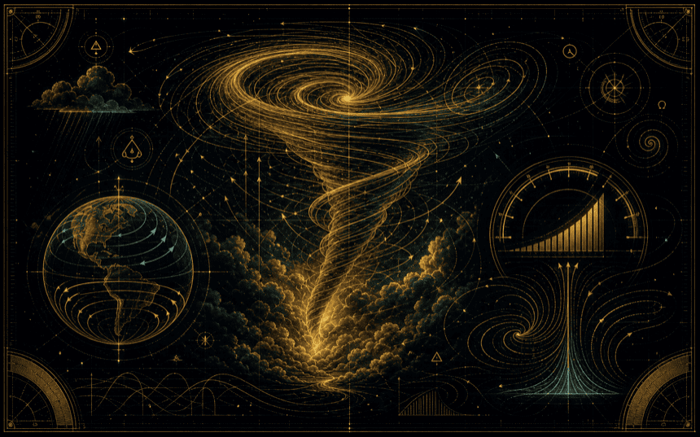
Le paramètre qui fait tourner les cyclones : nul à l'équateur, maximal aux pôles, et de signe opposé entre les deux hémisphères (antihoraire au nord, horaire au sud). Réglez la latitude.
L'énergie disponible pour faire monter l'air — le « plein d'essence » de la convection. Une estimation de la vitesse ascensionnelle : .
La rotation potentielle stockée dans le cisaillement du vent : au-dessus de ~150 m²/s², le supercellulaire devient tornadique. Réglez le cisaillement et voyez le courant ascendant s'enrouler.
Acte V · Les lois du mouvement
Énergie, ressorts, pendules, trajectoires : les lois de Newton appliquées au mouvement de tous les jours, réglables au curseur.
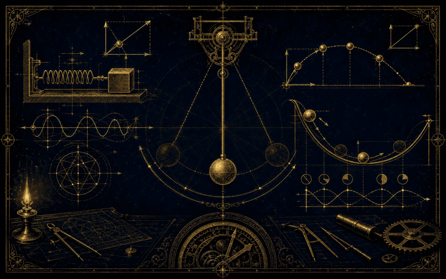
L'énergie du mouvement croît avec le carré de la vitesse : doubler v quadruple l'énergie (et la distance de freinage).
Sur une piste sans frottement, l'énergie se transforme mais ne se perd pas : en haut tout est potentiel, en bas tout est cinétique. Regardez les deux barres s'échanger.
La force de rappel d'un ressort est proportionnelle à l'étirement. La masse oscille avec une période qui dépend de k et m, jamais de l'amplitude.
La période ne dépend que de la longueur (aux petites oscillations) — ni de la masse, ni de l'amplitude. C'est ce qui fait les horloges.
Sous accélération constante, la position suit une parabole du temps. Réglez a et la vitesse initiale, suivez le mobile et sa courbe x(t).
Pour tourner, il faut une force dirigée vers le centre. Elle grandit avec le carré de la vitesse et diminue avec le rayon.
Quand deux corps se heurtent sans perte, quantité de mouvement et énergie cinétique sont toutes deux conservées. Une masse légère rebondit, une lourde encaisse à peine — comme au billard.
Sur une pente, le poids se décompose : une part fait glisser, l'autre presse contre la surface et nourrit le frottement. Le bloc ne part que si .
« Donnez-moi un point d'appui… » : une petite force à grand bras équilibre une grande force à petit bras. Le moment (force × distance) est ce qui compte. Cherchez l'équilibre parfait.
Acte VI · La force qui tient les mondes
La même loi fait tomber la pomme et tourner les planètes. De Newton à Kepler, la gravité au bout du curseur.
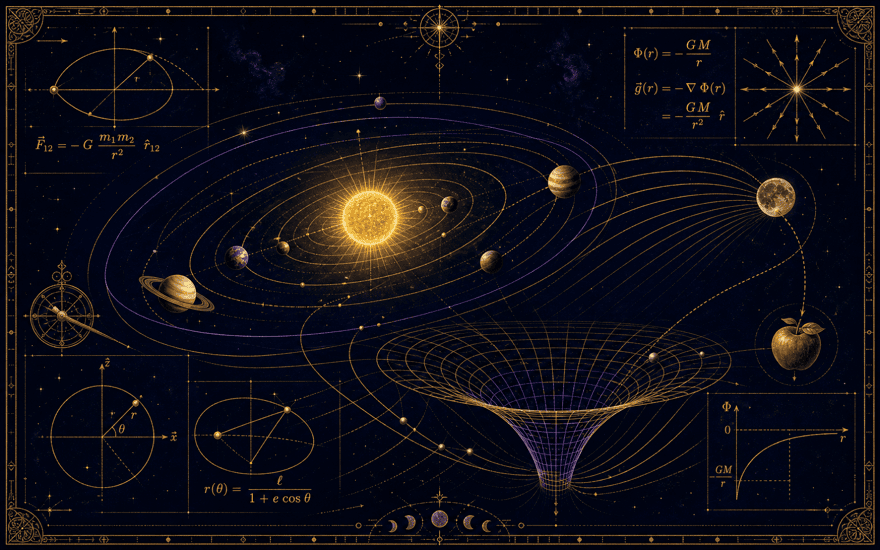
Deux masses s'attirent proportionnellement à leur produit, et en inverse du carré de leur distance. La même constante pour la pomme et la Lune.
L'intensité de la pesanteur faiblit avec l'altitude. Montez d'un rayon terrestre, et votre poids est divisé par quatre.
Plus une planète est loin, plus son année est longue — et pas un peu : le carré de la période suit le cube du rayon. (En unités solaires : .)
La gravité creuse un puits d'énergie : pour s'en échapper, il faut remonter toute la pente. C'est l'origine de la vitesse de libération.
Acte VII · Charges & courants
D'où vient le courant, ce qu'est une tension, comment deux charges se parlent — la loi d'Ohm et la loi de Coulomb, en direct.
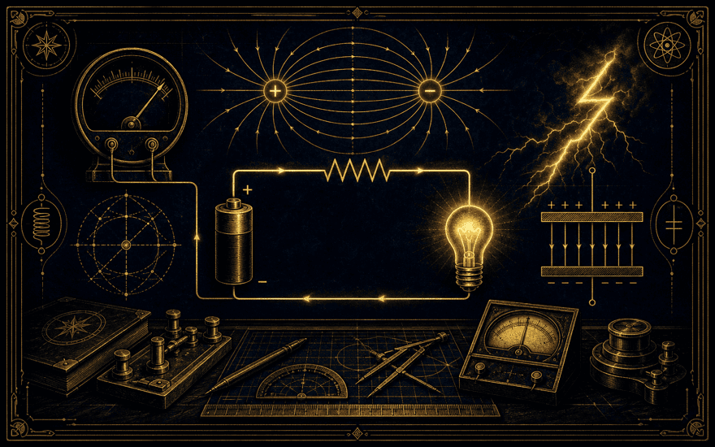
La tension pousse, la résistance freine : le courant qui passe est . Regardez les électrons circuler et l'ampoule s'allumer.
Les charges de même signe se repoussent, de signes opposés s'attirent — avec la même loi en 1/r² que la gravité, mais 10³⁶ fois plus forte.
Une charge emplit l'espace de lignes de champ : sortantes pour le +, entrantes pour le −. Une charge-test y ressent une force.
Deux plaques stockent une charge proportionnelle à la tension — et une énergie dans le champ entre elles.
En série, les résistances s'ajoutent (le courant les traverse l'une après l'autre). En parallèle, c'est l'inverse des résistances qui s'ajoute, et l'ensemble résiste moins que la plus petite. Basculez le montage.
Tout courant qui traverse une résistance la chauffe : c'est le grille-pain, l'ampoule à incandescence, le radiateur — et la perte dans les lignes haute tension. La puissance grimpe comme le carré du courant.
Un condensateur ne se remplit pas d'un coup : il suit une exponentielle de constante de temps . Au bout de , il est plein à 99 %. C'est ce qui cadence les clignotants et les minuteries.
Acte VIII · Quand l'électricité rencontre le magnétisme
Une charge qui bouge crée du magnétisme ; un aimant qui bouge crée du courant. Lorentz, Laplace, Faraday — la danse qui fait tourner moteurs et alternateurs.
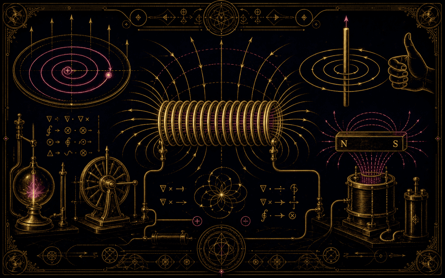
Dans un champ magnétique, une charge en mouvement est déviée perpendiculairement : elle s'enroule en cercle (rayon ). C'est le principe du cyclotron.
Un fil parcouru par un courant dans un champ magnétique subit une force — c'est elle qui fait tourner tous les moteurs électriques.
Bougez un aimant près d'une bobine, et un courant apparaît — proportionnel à la vitesse de variation du flux. C'est le principe de l'alternateur.
Un courant entoure son fil de cercles de champ magnétique (règle de la main droite), d'autant plus intenses que le courant est fort et qu'on est proche.
Empilez des spires et le champ magnétique à l'intérieur devient uniforme, comme dans un barreau aimanté — mais commandé par le courant. Il ne dépend que du nombre de spires par mètre et de l'intensité . C'est le cœur des électroaimants et des IRM.
Acte IX · Vibrations & lumière
Ce qui se propage, se superpose, se réfracte. Des sinus qui s'additionnent jusqu'à n'importe quelle forme, à la lumière qui se courbe dans le verre.
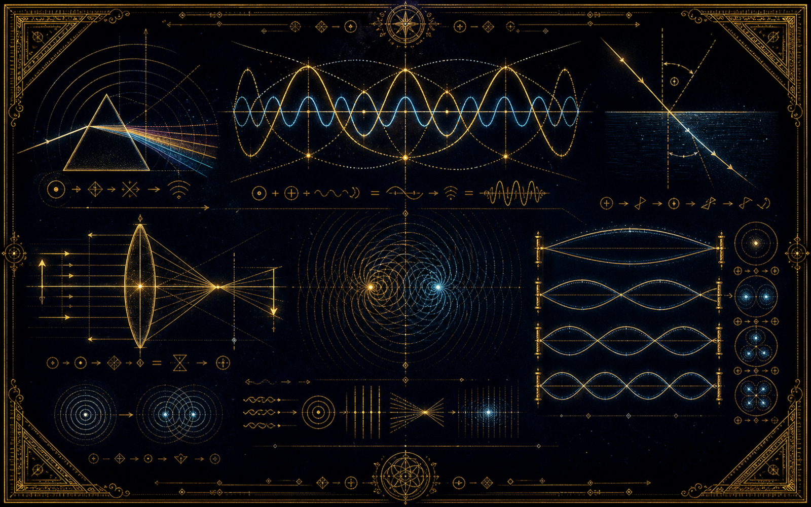
N'importe quelle forme périodique est une somme de sinus. Ajoutez les harmoniques une à une et regardez un carré (ou une dent de scie) se construire — avec les ondulations de Gibbs aux bords.
Deux ondes se superposent : par endroits elles s'ajoutent, par endroits elles s'annulent. Rapprochez les fréquences et entendez (voyez) le « wah-wah » des battements.
La lumière se courbe en changeant de milieu. Au-delà d'un angle critique, elle ne passe plus du tout : réflexion totale (le principe de la fibre optique).
Deux rayons suffisent à trouver l'image : l'un parallèle (passe par le foyer), l'autre par le centre. Approchez l'objet et l'image grandit, s'inverse, file à l'infini.
Une source qui s'approche comprime ses fronts d'onde (son plus aigu) ; qui s'éloigne, les étire (plus grave). La sirène qui passe, le décalage des galaxies.
Une corde fixée aux deux bouts ne vibre qu'en modes entiers (1, 2, 3… ventres) : c'est toute la musique. Choisissez l'harmonique.
Acte X · Chaleur & agitation
La température, c'est de l'agitation. Des particules qui frappent un piston, un objet qui rougit puis blanchit, un café qui refroidit.
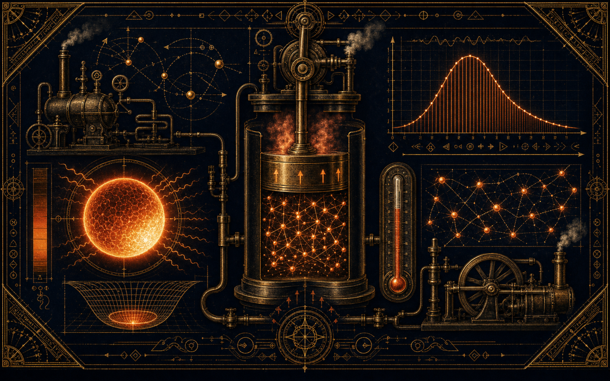
Pression, volume, température sont liés. Chauffez : les particules s'agitent et frappent plus fort. Comprimez : la pression monte. Le moteur de tout.
Tout corps chaud rayonne : sa couleur dit sa température (Wien) et sa puissance grimpe en T⁴ (Stefan). Une étoile passe du rouge au bleu.
Dans un gaz, les molécules n'ont pas toutes la même vitesse : une distribution qui s'étale et se décale vers la droite quand on chauffe.
Un café chaud refroidit vite au début, puis de plus en plus lentement en approchant la température de la pièce. Décroissance exponentielle.
Acte XI · Quand le simple devient imprévisible
Des règles élémentaires qui engendrent une complexité infinie : la route vers le chaos, le papillon de Lorenz, les populations, les épidémies.
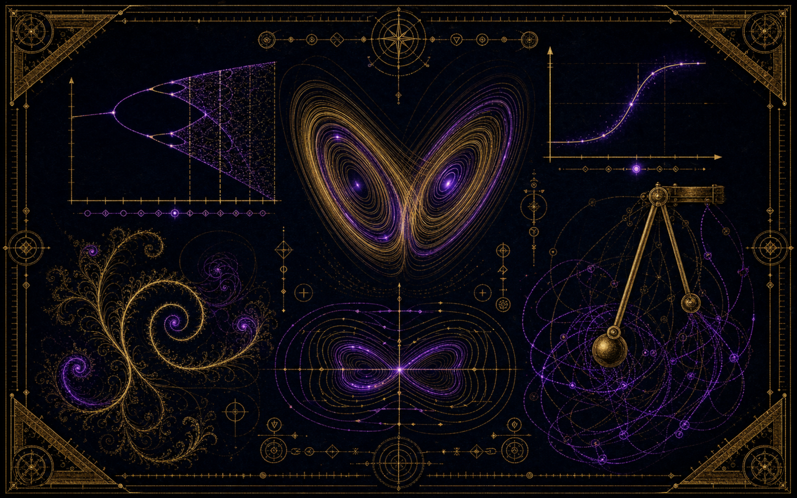
La formule la plus simple qui devienne chaotique. En montant r, l'équilibre se dédouble, puis re-dédouble, jusqu'au chaos — une fractale. Déplacez le curseur le long de la cascade.
Trois équations simples du temps, et un papillon infini se dessine — jamais deux fois le même tour. C'est l'origine de « l'effet papillon ».
Une population croît d'abord vite, puis sature à la capacité K du milieu : la courbe en S, des bactéries aux marchés.
Sains → Infectés → Rétablis. Le nombre décide de tout : au-dessus de 1, ça flambe. « Aplatir la courbe », en direct.
Deux pendules accrochés : un système parfaitement déterministe, et pourtant imprévisible — la moindre différence de départ change tout.
L'ivrogne qui titube : après n pas au hasard, il s'éloigne typiquement de √n pas. Le mouvement brownien, la diffusion, la bourse.
Acte XII · Le hasard a ses lois
Du désordre individuel naît l'ordre collectif : la cloche de Gauss qui surgit, la moyenne qui converge, la droite qui résume un nuage.
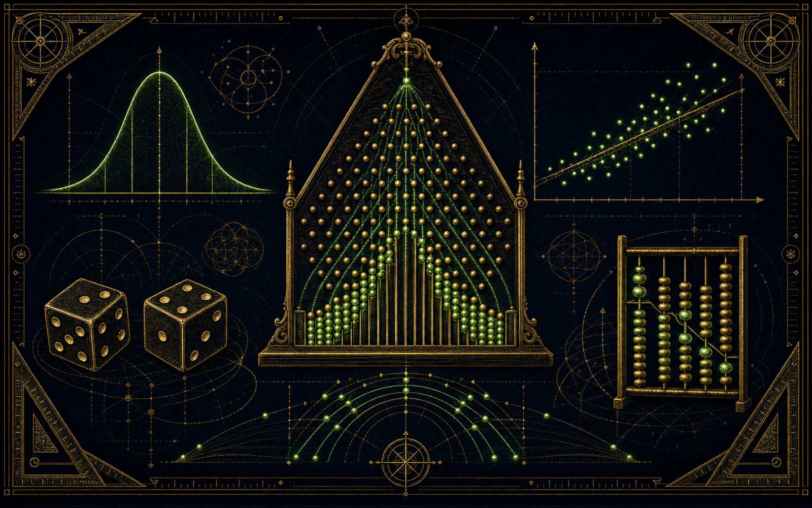
Des billes tombent, rebondissent au hasard à chaque clou — et pourtant elles forment toujours la cloche de Gauss. Le théorème central limite, en vrai.
Un dé donne n'importe quoi ; mais la moyenne de milliers de lancers se cale inexorablement sur 3,5. Le hasard devient certitude à grande échelle.
La droite qui passe « au mieux » dans un nuage de points (moindres carrés). Cliquez pour semer des points et regardez la droite — et le R² — suivre.
La probabilité d'obtenir k succès en n essais (pile/face truqué). Réglez n et p et voyez la distribution se déformer.
Acte XIII · L'espace-temps d'Einstein
À l'approche de la lumière, le temps ralentit, les longueurs se contractent, l'énergie explose. Le facteur au bout du curseur.
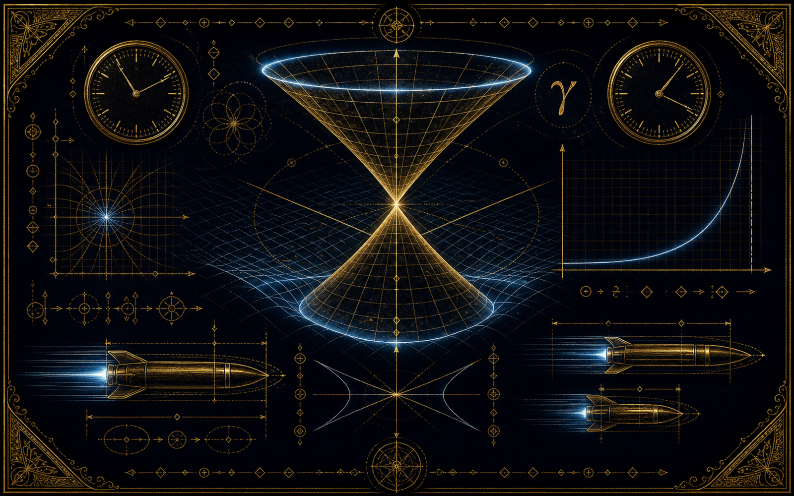
Une horloge qui file près de la lumière bat plus lentement. Poussez v vers c : l'aiguille du voyageur se fige et γ explose.
Dans le sens du mouvement, une fusée rapide est vue raccourcie. À 0,87 c, elle ne fait plus que la moitié de sa longueur au repos.
L'énergie totale d'une masse en mouvement tend vers l'infini quand v → c : voilà pourquoi rien de massif n'atteint la vitesse de la lumière.
0,7 c + 0,7 c ne font pas 1,4 c : la relativité plafonne toute somme de vitesses à c. Comparez le calcul classique et le vrai.
Acte XIV · Le calcul rendu visible
Les formules qui font tourner les machines : comment un coût explose avec la taille des données, comment on traque les nombres premiers, comment on range une liste. La logique, animée pas à pas.
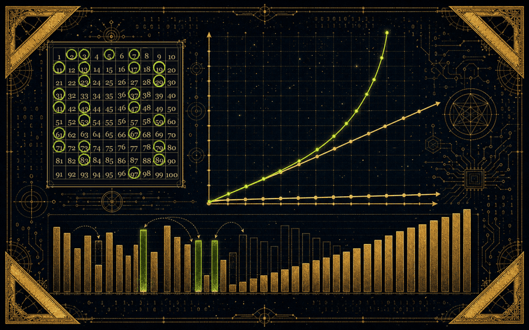
Le grand O décrit comment le temps de calcul grandit avec la taille des données. Un algorithme en double-triple vite ; un devient impraticable au-delà de quelques dizaines d'éléments. Comparez les courbes (échelle logarithmique).
Un algorithme vieux de 22 siècles : on garde 2, on raye tous ses multiples, on passe au prochain survivant (3), on raye ses multiples… Ce qui résiste est premier. Il suffit de cribler jusqu'à .
Trois façons de ranger une liste, comparées en direct. Le tri à bulles fait remonter le plus grand à chaque passe ; l'insertion place chaque carte à sa place dans la main ; la sélection cherche le minimum et l'amène en tête. Mélangez et regardez-les converger.
Index
Toutes les formules de l'Empire en un coup d'œil — rendues en LaTeX, reliées à leur dossier d'origine et à leur atelier ci-dessus.

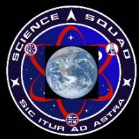


Les formules réunies ici sont celles de leurs dossiers respectifs (Artemis II, Tornades, le Tableau périodique, les Champs de vecteurs). Cet atlas n'invente rien : il met en mouvement ce qu'ils ont écrit.
Des transcriptions de lives devenues pages immersives, où la science répond fait par fait. Ce dossier transversal rassemble le langage commun de tous les autres : les mathématiques, rendues manipulables.
Empire contre Intox — Les Formules de l'Empire · atlas interactif des équations · rendu KaTeX, visualisations maison